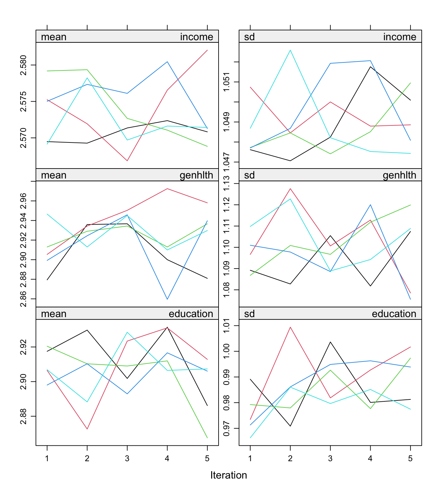
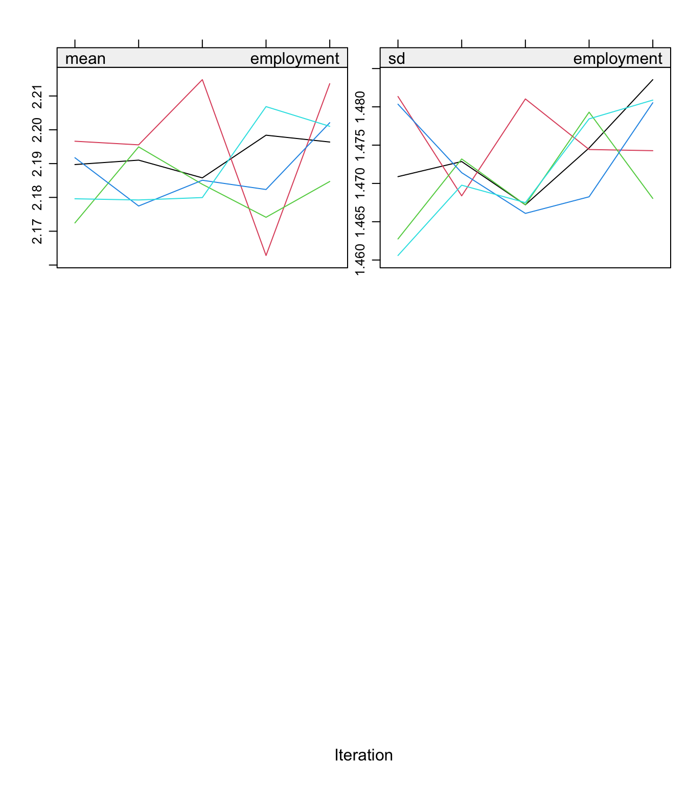

Code
source("_common.R")
brfss_clean <- readRDS(file.path(processed_dir, "02-brfss-clean.rds"))
knitr::opts_chunk$set(
cache.extra = c(
cache_context,
list(data = tools::md5sum(file.path(processed_dir, "02-brfss-clean.rds")))
)
)source("_common.R")
brfss_clean <- readRDS(file.path(processed_dir, "02-brfss-clean.rds"))
knitr::opts_chunk$set(
cache.extra = c(
cache_context,
list(data = tools::md5sum(file.path(processed_dir, "02-brfss-clean.rds")))
)
)Most R modeling functions silently drop every respondent with a missing value in any model variable. Household income is missing for 19.1% of respondents, so a model of diabetes by income would lose about one adult in five. Chapter 3 showed that the people who do not report income are older, in worse health, and more likely to have diabetes than those who do. Dropping them loses precision and can bias the results.
Multiple imputation keeps everyone. It works in three steps:
We use the mice package (multivariate imputation by chained equations), which imputes one variable at a time from the others and cycles through them until the imputations stabilize.
We impute the outcomes, the exposure, the covariates, and the two auxiliary variables (education and employment). Auxiliary variables are not in any model, but they predict income well, which makes the imputations more accurate and the “missing at random” assumption more plausible.
# diabetes_yes and fair_poor are recomputed from the imputed diabetes and general health in
# later chapters. Numeric age is used only in the descriptive example; models use age_group.
imp_data <- brfss_clean |> tidylog::select(-diabetes_yes, -fair_poor, -age)select: dropped 3 variables (diabetes_yes, fair_poor, age)colSums(is.na(imp_data)) weight strata psu_id state diabetes genhlth
0 0 0 0 1034 1310
cost_barrier income age_group sex race_eth education
1673 87423 0 0 0 2363
employment
8402 It can feel like cheating to use diabetes to impute income. It is not: leaving the outcome out assumes income is unrelated to diabetes among the people with missing income, which biases the association toward zero.
Imputation models are regression models. If they ignore the survey design, the imputed values reflect the sample, and later weighted estimates can be biased. The practical recommendation (Reiter, Raghunathan, and Kinney, 2006) is to use the design variables as predictors:
The predictor matrix says which variables predict which: a 1 in row income, column weight means the weight is used to impute income.
predictors <- mice::make.predictorMatrix(imp_data)
predictors[, c("strata", "psu_id", "state")] <- 0 # kept in the data, not used as predictors
predictors weight strata psu_id state diabetes genhlth cost_barrier income
weight 0 0 0 0 1 1 1 1
strata 1 0 0 0 1 1 1 1
psu_id 1 0 0 0 1 1 1 1
state 1 0 0 0 1 1 1 1
diabetes 1 0 0 0 0 1 1 1
genhlth 1 0 0 0 1 0 1 1
cost_barrier 1 0 0 0 1 1 0 1
income 1 0 0 0 1 1 1 0
age_group 1 0 0 0 1 1 1 1
sex 1 0 0 0 1 1 1 1
race_eth 1 0 0 0 1 1 1 1
education 1 0 0 0 1 1 1 1
employment 1 0 0 0 1 1 1 1
age_group sex race_eth education employment
weight 1 1 1 1 1
strata 1 1 1 1 1
psu_id 1 1 1 1 1
state 1 1 1 1 1
diabetes 1 1 1 1 1
genhlth 1 1 1 1 1
cost_barrier 1 1 1 1 1
income 1 1 1 1 1
age_group 0 1 1 1 1
sex 1 0 1 1 1
race_eth 1 1 0 1 1
education 1 1 1 0 1
employment 1 1 1 1 0Each row of the predictor matrix is one imputation model (the variable being imputed), and each column is a possible predictor. Changing a single cell changes a single model. Income is the variable with the most missing values, so it is where design information matters most. To also use the state when imputing income, and nowhere else:
predictors_state <- predictors
predictors_state["income", "state"] <- 1 # state predicts income only
predictors_state["income", ] weight strata psu_id state diabetes genhlth
1 0 0 1 1 1
cost_barrier income age_group sex race_eth education
1 0 1 1 1 1
employment
1 To use it, replace predictorMatrix = predictors with predictorMatrix = predictors_state in the imputation below. Compare diagnostics and pooled estimates under both matrices to assess the effect of including state. The worked analysis uses predictors, which includes the weight but omits state.
We impute every variable with predictive mean matching (PMM). For each person with a missing value, PMM predicts the value from a regression, finds the respondents with an observed value whose predictions are closest, and copies the observed value of one of them, chosen at random. Imputed values are therefore always real answers (an income group, never “2.4”), and PMM is fast: one linear regression per variable.
methods <- mice::make.method(imp_data, defaultMethod = rep("pmm", 4))
methods weight strata psu_id state diabetes genhlth
"" "" "" "" "pmm" "pmm"
cost_barrier income age_group sex race_eth education
"pmm" "pmm" "" "" "" "pmm"
employment
"pmm" An empty string means the variable has nothing missing.
mice’s defaults model each categorical variable by its type: logistic regression for two categories, proportional-odds regression for ordered ones, and multinomial regression for unordered ones. This teaching example uses PMM for all incomplete variables to keep the workflow compact. When adapting it, choose methods appropriate to each variable’s measurement scale, inspect the imputations and compare alternatives. A small proportion of missing values alone does not establish that a method is appropriate. Always report the method used for each variable.
Each completed dataset is independent of the others, so they can be imputed at the same time on different processor cores. furrr::future_map() runs one imputation per task, and mice::ibind() combines the single imputations into one object. future::plan() sets the number of parallel workers. First detect the available cores; reserve one core and use at most four workers, or fewer if there are fewer imputations. The cap limits memory use because each worker holds its own data.
The main example uses 5 imputations to keep a classroom run short. For a substantive analysis, assess the fraction of missing information and the stability of pooled estimates and standard errors, and increase the number of imputations when needed.
The seed argument makes the results reproducible. furrr gives each task its own random-number stream derived from the seed, so the imputations are identical on every computer, whatever its number of cores. (mice::futuremice() also imputes in parallel, but its results depend on the number of cores.)
n_cores <- future::availableCores()
n_workers <- min(n_imputations, 4L, max(1L, n_cores - 1L))
tibble::tibble(available_cores = n_cores, workers = n_workers)# A tibble: 1 × 2
available_cores workers
<int> <int>
1 14 4future::plan(future::multisession, workers = n_workers)
start <- Sys.time()
imputed <- furrr::future_map(
seq_len(n_imputations),
\(i) {
mice::mice(
imp_data,
m = 1,
maxit = 5,
method = methods,
predictorMatrix = predictors,
printFlag = FALSE
)
},
.options = furrr::furrr_options(seed = seed)
) |>
purrr::reduce(mice::ibind)
future::plan(future::sequential)
Sys.time() - startTime difference of 1.949055 mins# Check: the number of imputations we asked for, and no missing values left.
stopifnot(
imputed$m == n_imputations,
purrr::every(imputed$imp, \(values) !anyNA(values))
)maxit = 5 (the mice default) runs five cycles through the variables for each imputation. Only income has much missing data and the other variables are almost complete, so the chains settle quickly; the convergence plots in the next section check that five cycles are enough.
Three checks come before using imputed data.
1. Did mice log any problems? NULL means none. Otherwise the log lists variables mice dropped from a model (for example, because they were constant or collinear).
imputed$loggedEventsNULL2. Did the algorithm converge? Each line is one imputation (a “chain”): the mean and standard deviation of the imputed values at each iteration. The lines should mix freely, with no trend in the last iterations.
plot(imputed, c("income", "genhlth", "education", "employment"))

3. Are the imputed values plausible? Compare the imputed incomes with the reported ones.
dplyr::bind_rows(
observed = dplyr::count(imp_data, income),
imputed = dplyr::count(
tibble::tibble(income = unlist(imputed$imp$income)),
income
),
.id = "values"
) |>
tidylog::filter(!is.na(income)) |>
tidylog::mutate(percent = round(100 * n / sum(n), 1), .by = values) |>
tidyr::pivot_wider(
id_cols = income,
names_from = values,
values_from = percent
)filter: removed one row (11%), 8 rows remaining
mutate: new variable 'percent' (double) with 8 unique values and 0% NA# A tibble: 4 × 3
income observed imputed
<fct> <dbl> <dbl>
1 Less than $25,000 14.7 19.1
2 $25,000 to $49,999 24.7 28.2
3 $50,000 to $99,999 30.4 29
4 $100,000 or more 30.3 23.7The two distributions do not need to match. Under MAR they should differ when the people with missing income differ from those who reported it, as Chapter 3 showed. What we look for is plausibility: no impossible values, and differences that make sense.
The mids object holds the original data and the imputed values; mice::complete() rebuilds the completed datasets from it in the next chapters.
saveRDS(imputed, file.path(processed_dir, "04-imputed.rds"))